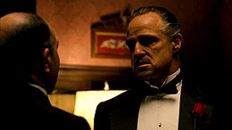

IL PADRINO
di Francis Ford Coppola
1972
Il film è ambientato a New York in pieno dopoguerra, tra la fine degli anni 1940 e la prima metà degli anni 1950. Il protagonista è don Vito Corleone, capo di una famiglia mafiosa divenuta col tempo una delle più potenti organizzazioni criminali della Grande Mela, grazie al rispetto e all'onorabilità ottenute dal patriarca e dai figli coinvolti nelle attività malavitose. Quando don Vito rimane vittima di un attentato da parte di un boss rivale, il figlio Michael Corleone comincia l'ascesa nell'impero criminale della famiglia, fino a diventare il nuovo "padrino".
